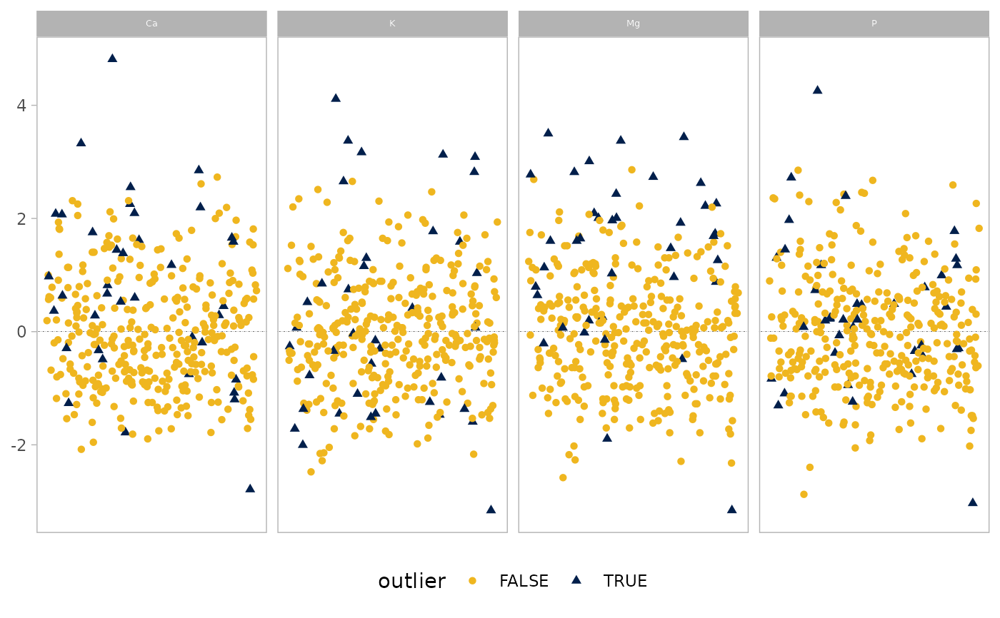
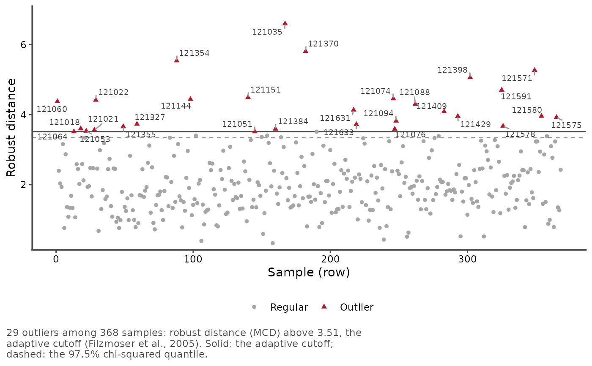
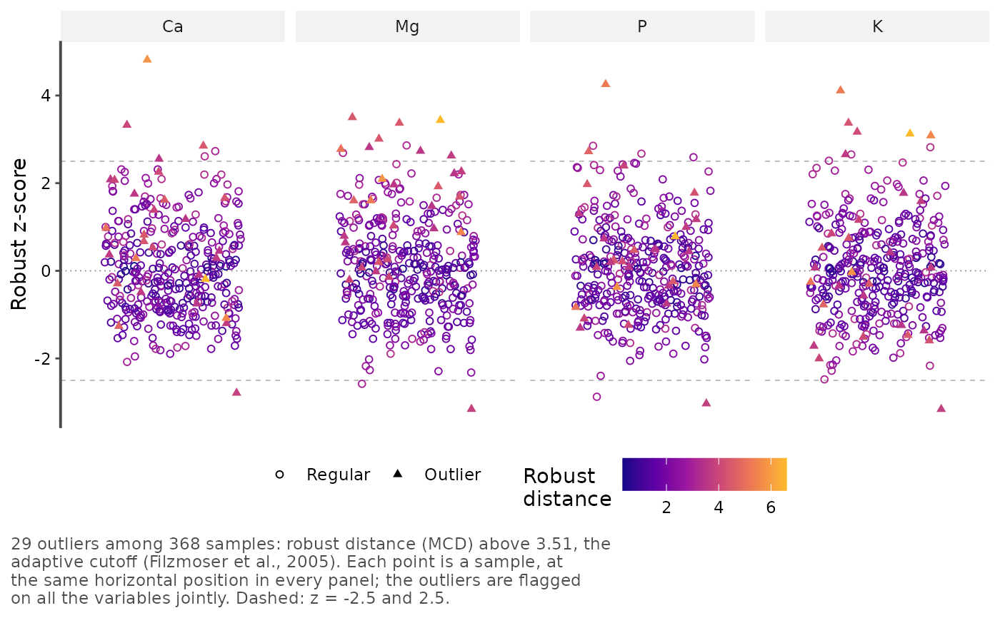

This function creates a visual representation of multivariate outliers using a univariate plot. It uses robust covariance estimation methods to identify outliers, and shows them on each variable, or by their robust distance.
Usage
plot_outliers(
x,
quan = 1/2,
alpha = 0.025,
plot = TRUE,
id = NULL,
cutoff = c("adaptive", "quantile"),
type = c("scores", "distance"),
color_by = c("outlier", "distance", "both"),
label_outliers = FALSE,
ylab = NULL,
title = NULL,
caption = TRUE,
base_size = 11,
show.outlier = deprecated(),
show.mahal = deprecated()
)Arguments
- x
A matrix or data frame of numeric variables, with optionally the column
id.- quan
A numeric value, between 0.5 and 1, the proportion of the observations used for the MCD estimates. Default is 0.5 (the largest breakdown point).
- alpha
A numeric value between 0 and 1: the quantile \(\chi^2_{p, 1-\alpha}\) from which the adaptive cutoff is searched (or the cutoff itself with
cutoff = "quantile"). Default is 0.025.- plot
A logical: plot (
TRUE, default) or return the table of the samples.- id
Optional column of
x(unquoted or as a string) identifying the samples, such as sample names: it names the outliers in the table and withlabel_outliers.- cutoff
"adaptive"(default), the adaptive cutoff of Filzmoser et al. (2005), or"quantile", the fixed \(\chi^2_{p, 1-\alpha}\) quantile.- type
"scores"(default), the robust z-scores of each variable, or"distance", the robust distance of each sample.- color_by
The colors of the points:
"outlier"(default), the outliers in red and the others in grey;"distance", the robust distance; or"both", the distance, with the outliers as triangles.- label_outliers
A logical: label the outliers with their
id, else their row number (FALSE, default). In the panels of robust z-scores, only the outliers beyond the univariate limits of the panel are labeled; the distance plot names them all.- ylab
The title of the value axis. Default is "Robust z-score", or "Robust distance" with
type = "distance".- title
The plot title. A long title is split into a title and a subtitle.
- caption
TRUE(default), a caption saying how the outliers are flagged and how to read the plot;FALSE, no caption; or a caption of your own.- base_size
The size of the text, in points. Default is 11; use the text size of the journal (often 7 to 9 points) for a figure saved at its printed size.
- show.outlier, show.mahal
![[Deprecated]](figures/lifecycle-deprecated.svg) Use
Use
color_by("outlier","distance"or"both"), andplot = FALSEfor the table.
Value
A ggplot object, or with plot = FALSE a tibble with one row per
sample (without missing values): its row in x, its id, its robust
Mahalanobis distance mahalanobis, the cutoff (on the same scale),
outlier, its weight in the adaptive reweighted estimates (0 for the
samples at or beyond the adaptive cutoff, 1 for the others), and its
robust z-score on each variable.
Details
The robust location and scatter of the data are estimated by the Minimum
Covariance Determinant (MCD, Rousseeuw and Van Driessen, 1999), from which
the robust Mahalanobis distance of each sample is computed. The outliers
are the samples whose squared distance exceeds the adaptive cutoff of
Filzmoser, Garrett and Reimann (2005): the tail of the distances is
compared with the \(\chi^2_p\) distribution beyond its \(1 - \alpha\)
quantile, and the cutoff is moved out to where they depart from it. When
they do not depart from it, no sample is an outlier: unlike a fixed
quantile, which flags about \(\alpha\) of clean data, the adaptive
cutoff flags (nearly) none. cutoff = "quantile" uses the fixed
\(\chi^2_{p, 1-\alpha}\) quantile instead. The method follows the
functions arw() and aq.plot() of the mvoutlier package (its
uni.plot(), which this plot follows, flags the samples beyond the fixed
quantile).
The adaptive cutoff exists only when more distances exceed the quantile
than clean data would give (a proportion of about \(0.24/\sqrt{n}\)):
a single outlier in a small sample, however far, is then not flagged. It
stands out above the dashed quantile in the distance plot; use
cutoff = "quantile" to flag it.
Robust z-scores (type = "scores", the default). Each variable is
drawn in its own panel, standardized by the adaptive reweighted location
and scale (the mean and standard deviation of the samples that are not
outliers). Each point is a sample, at the same horizontal position in
every panel, so that a sample can be followed from one variable to the
next. The outliers are flagged on all the variables jointly: they need
not be extreme in any single variable, and a sample beyond the dashed
univariate limits (\(\pm 2.5\)) need not be a multivariate outlier.
Robust distances (type = "distance"). The robust distance of each
sample, in the order of the rows, with the cutoff (solid) and the
\(\chi^2_{p, 1-\alpha}\) quantile (dashed).
Rows with missing values are left out, with a message.
References
Filzmoser, P., Garrett, R. G., Reimann, C. (2005). Multivariate outlier detection in exploration geochemistry. Computers & Geosciences, 31(5):579-587
Rousseeuw, P. J., Van Driessen, K. (1999). A fast algorithm for the minimum covariance determinant estimator. Technometrics, 41(3):212-223
See also
adjusted_boxplot() and generalized_boxplot() for univariate
outliers.
Examples
data(forageLIBS)
# mineral contents (%) of the forage samples
contents <- forageLIBS[c("Measurement", "Ca", "Mg", "P", "K")]
plot_outliers(contents, id = Measurement)

# the robust distance of each sample, the outliers named
plot_outliers(contents, id = Measurement, type = "distance", label_outliers = TRUE)

# colored by robust distance, the outliers as triangles
plot_outliers(contents, id = Measurement, color_by = "both")

# the table of the samples
res <- plot_outliers(contents, id = Measurement, plot = FALSE)
res[res$outlier, ]
#> # A tibble: 29 × 10
#> row id mahalanobis cutoff outlier weight Ca Mg P K
#> <int> <int> <dbl> <dbl> <lgl> <dbl> <dbl> <dbl> <dbl> <dbl>
#> 1 1 121060 4.37 3.51 TRUE 0 0.671 0.196 0.228 3.37
#> 2 13 121064 3.51 3.51 TRUE 0 -0.752 1.48 -0.750 -1.24
#> 3 18 121018 3.60 3.51 TRUE 0 2.08 0.644 -1.30 0.0693
#> 4 22 121053 3.53 3.51 TRUE 0 -0.0970 0.964 -0.343 1.77
#> 5 28 121021 3.56 3.51 TRUE 0 1.18 2.73 0.489 0.418
#> 6 29 121022 4.42 3.51 TRUE 0 0.820 3.01 0.244 0.747
#> 7 49 121355 3.66 3.51 TRUE 0 -0.490 -0.0172 0.195 2.66
#> 8 59 121327 3.73 3.51 TRUE 0 -1.20 2.26 1.17 0.0693
#> 9 88 121354 5.54 3.51 TRUE 0 -1.08 0.878 -0.310 3.09
#> 10 98 121144 4.44 3.51 TRUE 0 -0.293 3.50 1.97 0.521
#> # ℹ 19 more rows